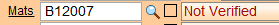

Not Verified vs Discontinued
Not Verified Items vs Discontinued Items
-
After downloading the latest prices, FrameReady automatically checks for possible Discontinued Items that have not been verified, meaning the items in the Price Codes file could not be found in the update file.
-
During the update procedure the Not Verified items list may be printed, as they may be discontinued and and the corner samples may need to be removed.
-
FrameReady then asks if you would like those items flagged as Not Verified in the system.
-
If yes, then the Validation field in the Price Codes file is marked as Not Verified.
-
When adding a Not Verified item onto a Work Order, the Description field displays "Not Verified" in red to immediately let the framer know to check inventory or choose a different item.

This feature is available in the Frame1, Mats (all three fields), Mount/Stretch fields.
When is a Not Verified Item not Discontinued?
-
When is a Not Verified Item not discontinued? When the moulding or mat board is still valid but the number was changed. An example would be if the moulding manufacturer changed the moulding number, e.g. 12345 became 123-45.
-
If you still have inventory in stock, then it is recommended that you NOT remove the item number from the database until it is all your inventory is sold.
-
When a discontinued item is entered onto a custom framing order, the word Discontinued appears in the Description field (even though in the Price Codes file the Description still says the original, e.g. 3/4 oak). The framer may then check to see if they have enough to complete the order.
© 2023 Adatasol, Inc.